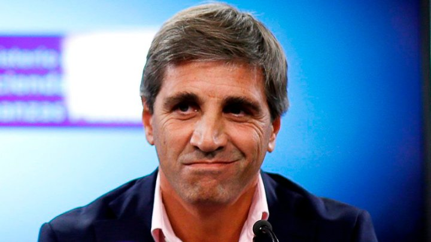

El Gobierno salió a asegurar que todos los dólares que envíe el Fondo Monetario Internacional serán de libre disponibilidad una vez que formen parte de las reservas del Banco Central. Además, el equipo económico espera un desembolso más amplio de lo habitual para este tipo de programas como primer paso del nuevo acuerdo, una vez que consiga la luz verde del directorio.
El ministro de Economía Luis Caputo le puso cifras este jueves a la mañana al programa luego de haber acordado con la directora gerente del FMI, Kristalina Georgieva, revelar el tamaño del programa, al que todavía le falta el guiño final del directorio. Horas después, el presidente Javier Milei especificó que esos dólares podrán ser utilizados por el Central a discreción y que el programa no incluirá limitaciones de ese tipo.
